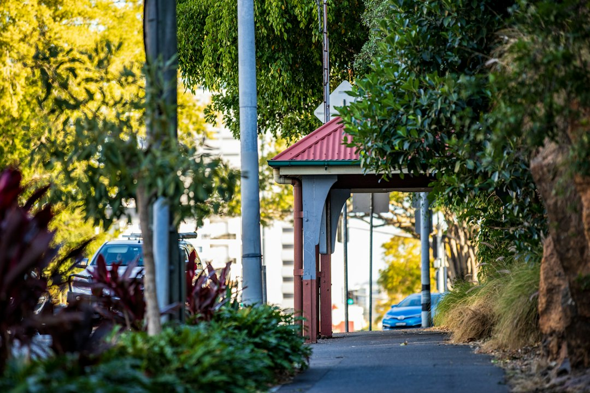

For a Brisbane home charger enquiry, prepare the normal vehicle position, proposed equipment location, switchboard access details and any owner or building-management questions before requesting an assessment. Fixed electrical work must be completed by an appropriately licensed Queensland electrical contractor. A switchboard upgrade is not automatic. The contractor assesses board condition, available capacity, proposed charging load and the likely cable route before specifying circuit and protection requirements.
For Brisbane homeowners comparing ev charger installation brisbane options, the practical work starts with parking position, switchboard access, cable reach and any approval questions attached to the property.
Ev Charger Installation Brisbane Explained
EV Charger Installation Brisbane frames the first step as a site assessment, not a product choice. Before that visit or enquiry, note where the vehicle normally parks, where the charger could be mounted and how the cable might reasonably reach the car from that point. The same notes should include switchboard access and any owner or building-management question that could affect permission or placement.
Useful preparation gives the contractor a clearer brief without asking the homeowner to design the electrical work. The published guidance says the assessment can determine available supply, safe equipment position and any access or building approvals needed before installation. In a straightforward home setting, the question may be whether the board, charger position and parking location can be assessed together. Where building management applies, permission may need attention before the job is treated as ready.
- Record the vehicle's usual parking spot, not only the most convenient spot on inspection day.
- Identify the proposed equipment location and whether the lead would reach the vehicle without awkward routing.
- Check whether the switchboard can be accessed for inspection.
- Write down owner or building-management questions before requesting the project review.
Switchboard and circuit questions
The published guidance is careful on switchboards: an upgrade is not automatic. The answer depends on the observed board condition, capacity and proposed charging load. That makes an assumption risky before assessment. A homeowner can ask whether the existing board is suitable, but the contractor still needs to inspect the intended load, cable route and board before specifying the circuit and protection.
The same restraint applies to charger size, cabling path and protection choices. The FAQ says a contractor assesses the intended charger load, existing switchboard and cable route before specifying the circuit and protection. A useful enquiry describes the property and access conditions, then leaves the electrical design to the licensed contractor.
For Brisbane EV charger enquiries where access is shared, the better question is not whether a board upgrade is always needed. Ask what the contractor needs to inspect before answering that question, whether any access constraint could change the route, and what information should be gathered from an owner or building manager first.
Who this applies to
This guide is for Brisbane homeowners planning a residential charger enquiry. It also suits owners who are still deciding where the vehicle will normally park, whether the proposed charger location is practical, or whether permission questions need to be raised before a contractor attends.
It is less useful for someone seeking a commercial charging design, a public charging site or a detailed electrical specification. The published wording is residential in focus and directs local enquiries to suitable licensed electrical contractors. It does not publish prices, installation timeframes, charger brands or guaranteed availability, so those details should be confirmed during the project review rather than assumed from a general guide.
Location still matters through the job conditions. The Brisbane locations listed include Brisbane City, New Farm, Paddington and Wynnum. Those place names do not change the core preparation: the assessment still turns on the parking position, proposed charger location, switchboard access and any approval question connected with the property.
How to compare the next conversation
A quote discussion should start with the assessment inputs, then move to the contractor's findings. Ask what was observed at the switchboard, what cable route is being assumed, where the charger would sit and whether any approval or access issue needs to be resolved before work proceeds. If the answer relies on facts not yet inspected, treat it as provisional.
Do not use this editorial guide as a substitute for electrical advice. The published FAQ states that fixed electrical work must be completed by an appropriately licensed Queensland electrical contractor. The practical value is in asking better questions before the quote, so the contractor receives the details needed to assess the job properly.
For another concise overview of the same Brisbane charger planning topic, this residential charger planning guide for Brisbane is a useful companion reference.
Before requesting a project review
The form guidance asks for suburb or postcode and a description of the project, including access and nearby structures. It also notes that photos can be provided later if a provider asks for them. That order is sensible: share enough to let the enquiry be assessed, then provide extra evidence when the provider knows what would help.
The form wording also says submitting details does not confirm provider availability, timing or acceptance of the work. That is important for planning. A homeowner should avoid booking other dependent work until the provider has assessed the enquiry and confirmed the next step.
- Describe the parking position and proposed charger location in plain terms.
- Explain where the switchboard is and whether it can be accessed.
- Note nearby structures or access limits that may affect the route.
- List any owner or building-management questions that may affect permission.
- Wait for the provider to ask for photos or further details rather than guessing what is required.
- Map the parking position. Write down where the vehicle normally parks and where a charger could be mounted.
- Check access points. Confirm whether the switchboard and likely work area can be accessed for assessment.
- Record permission questions. List any owner or building-management questions before requesting a review.
- Request assessment. Share the project details and let a licensed contractor determine suitability, circuit and protection requirements.
| Input to prepare | Why it matters | What to ask |
|---|---|---|
| Normal parking position | The charger location needs to suit where the vehicle usually sits. | Is this parking position practical for the proposed charger location? |
| Switchboard access | The contractor needs to assess board condition, capacity and the proposed load. | What needs to be inspected before circuit and protection are specified? |
| Approval questions | Owner or building-management issues may need to be resolved before installation. | Is any access or building approval needed before work can proceed? |
Common questions
Does a Brisbane home charger always need a switchboard upgrade? No. The published guidance says an upgrade is not automatic and depends on observed board condition, capacity and the proposed charging load.
Who should complete fixed EV charger electrical work in Queensland? Fixed electrical work must be completed by an appropriately licensed Queensland electrical contractor. The homeowner's role is to prepare access and site information for assessment.
What should I prepare before asking for a quote? Record the normal vehicle position, proposed charger location, switchboard access and any owner or building-management questions. Include access and nearby structures in the project description.
Does submitting an enquiry confirm timing or availability? No. The form wording states that submitting details does not confirm provider availability, timing or acceptance of the work.
This guide covers residential Brisbane charger planning, assessment questions, switchboard considerations and enquiry preparation.